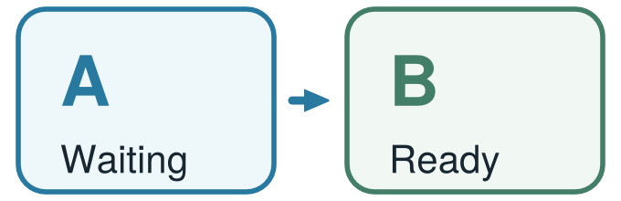

Backends
Each renderer reads the same recorded primitives. SVG preserves quadratic and cubic path commands exactly. TikZ, CeTZ and Makie sample curves into short line segments; cards, arrows and labels retain their positions.
using StateDiagramsSVG
d = Diagram(340, 110; title = "Two states")
state_card!(d, 10, 5, 140, 100, "A", "Waiting";
fill = "#eef7f9", accent = "#2879a0")
state_card!(d, 190, 5, 140, 100, "B", "Ready";
fill = "#f1f7f3", accent = "#427e68")
arrow!(d, 160, 55, 180, 55; color = "#2879a0")
save_svg("states.svg", d)
save_tikz("states.tex", d; standalone = true)
save_cetz("states.typ", d; standalone = true)
nothingThe .tex file is a complete LaTeX document when standalone=true; compile it with XeLaTeX or LuaLaTeX if labels contain Unicode. Without standalone, tikz(d) returns a tikzpicture to include in a document that loads TikZ. In state_diagram, put a TeX alternative after ~ in any label. TikZ uses that alternative verbatim, while SVG, CeTZ, and Makie use the plain label. Only use trusted TeX input. To make a browser-compatible SVG with the same TeX typesetting, compile the standalone source to PDF, then convert it to SVG:
xelatex workflow.tex
pdftocairo -svg workflow.pdf workflow.svgThe .typ file imports CeTZ 0.4.2 from Typst Universe. Without standalone, cetz(d) returns an includable Typst fragment. The version keyword selects another CeTZ release when needed.
The README example's generated files are available as SVG, TikZ, and CeTZ.

Makie
Makie is an optional dependency. Loading any Makie backend activates the extension; the returned figure can be edited or combined with other Makie content before saving.
import CairoMakie
CairoMakie.activate!()
fig, axis = makiefigure(d)
fig
Use makieplot!(axis, d) to draw into an existing Makie.Axis.